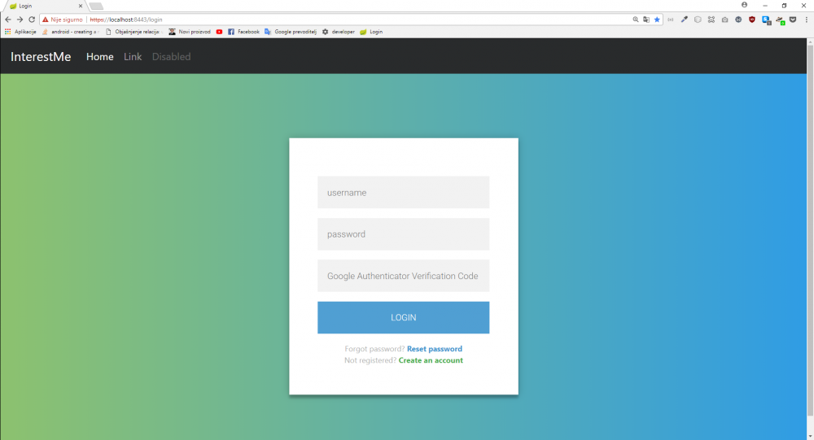
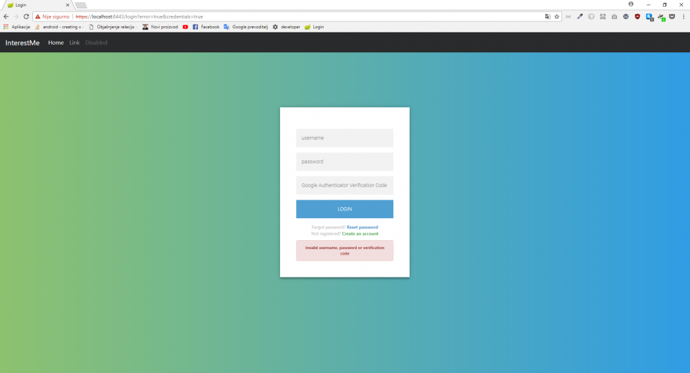
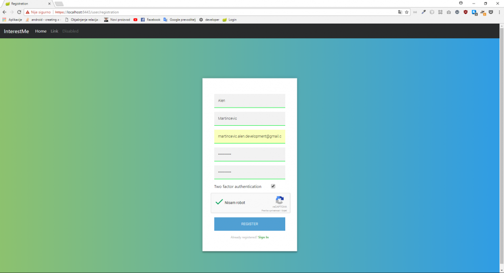
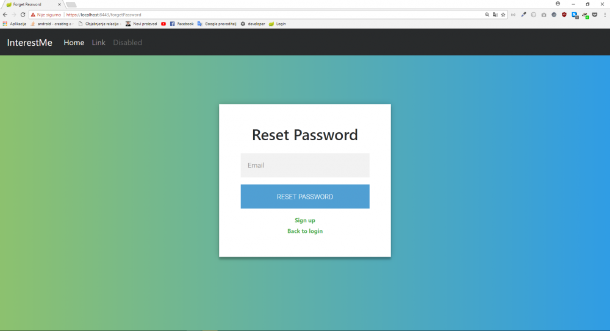
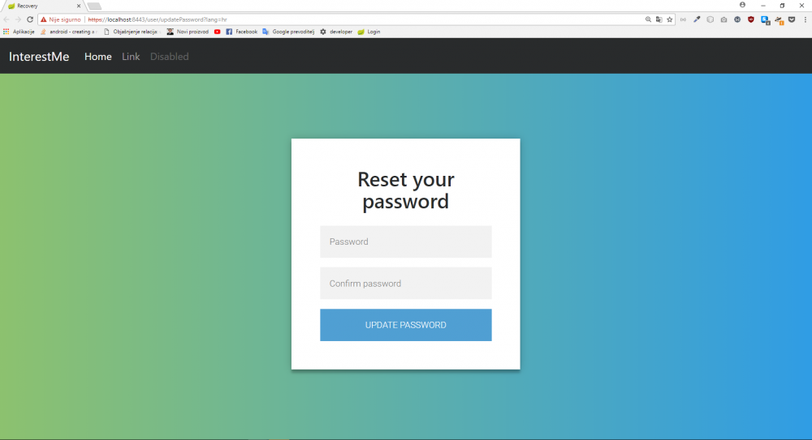
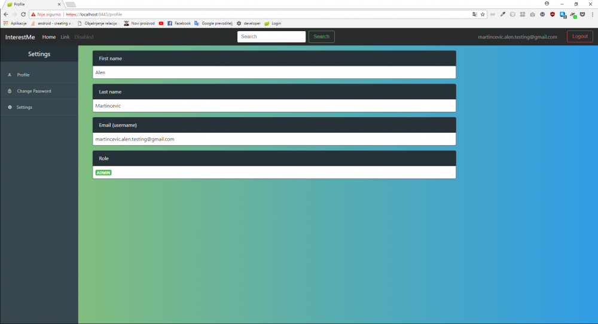
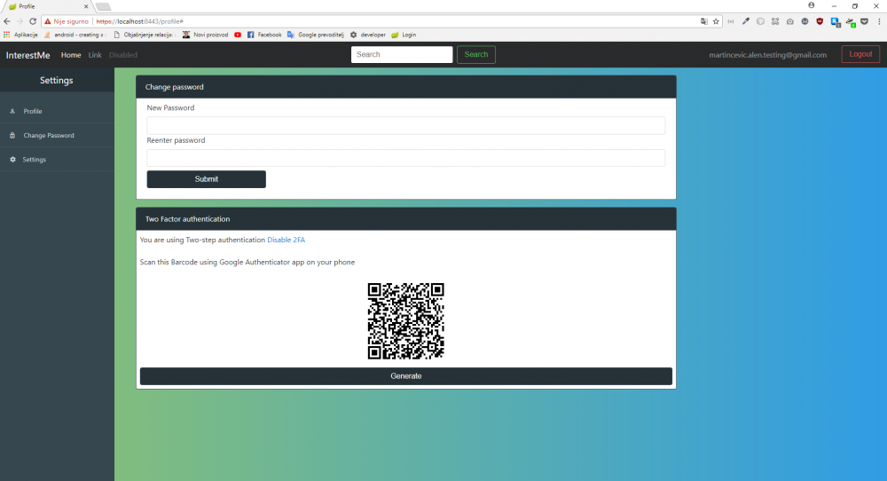

Spring Security framework
Temu rezervirao: Alen Martinčević
Ukratko o Spring Security framework-u
Spring security je Java/Java EE okvir koji omogućuje korištenje sigurnosnih mehanizama. Dva glavna područja na koja se Spring Security bazira jesu autentifikacija te autorizacijski mehanizam. Pod autentifikacijom smatramo postupak provjeravanja da li je netko onaj za koga se predstavlja da je (tu se prvenstveno pod tim nekim smatra uređaj ili neki drugi sustav koji može izvoditi neke akcije u vašoj aplikaciji). S druge strane autorizacija predstavlja mehanizam provjeravanja da li autentificirani korisnik ima prava tj. da li mu je dozvoljeno izvršavanje određenih radnji unutar aplikacije i ako jest kojih to sve točno radnji.
Neka od značajki koje nudi Spring Security:
- Sveobuhvatna i proširiva podrška za autentifikaciju i autorizaciju
- Zaštitu protiv napada kao što su session fixation, clickjacking, XSS, CSRF (Cross site request forgery), brute force napadi i slično
- Integracija servlet API-a
- Opcionalna integracija s Spring Web MVC
- i još mnogo toga
Na autentifikacijskoj razini, Spring Securit podržava široki raspon auntentikacijskih modula. Većina tih modula su pruženi od strane trećih strana ili su razvijeni od strane grupa koji se specijalizirano bave razvojem interneta i protokola kao što je IETE (Internet Engineering Task Force). Također, Spring Security pruža i set svojih vlastitih autentikacijskih značajki.
Neki od podržanih autentifikacijskih modula jesu:
- HTTP BASIC autentikacijska zaglavlja
- HTTP Digest autentikacijska zaglavlja
- HTTP X.509 za razmjenu klijentskih certifikata
- LDAP (u svrhe multi-platforme autentikacije)
- Autentikacija bazirana na obrascu
- OpenID autentikacija
- Kerberos
- i još mnogi drugi
Kreiranje Spring projekta
Kako bismo mogli koristiti naveden okvir za sigurnost (Spring Security) potrebno je kreirati Spring projekt. Postoje dva načina veoma laka načina. Jedan je da Spring projekt kreiramo pomoću IDEA koji podržava rad sa Springom kao što je primjerice IntelliJ. Drugi način je preko stranice Spring Initializr (https://start.spring.io) koja nam nudi automatsko generiranje datoteka potrebnih za pokretanje i rad Spring aplikacije ukomponiranih u datoteku projekta. Osim standardnih datoteka potrebnih za rad, moguće je odmah i dodati dodatne module tj. zavisnosti (eng. Dependencies). Primjerice, ako želimo raditi Web aplikaciju, potrebno je dodati modul Web. Isto tako ako želimo koristiti značajke Spring Security-a potrebno je dodati modul Security. U ovom projektu korištena su oba modula, uz dodatak JPA modula koji nam omogućuje korištenje ORM (Object-relation mapping) okvira, konkretno Hibernate okvira koji nam uvelike olakšava rad s bazom.
{kind=link}
Naravno dodatne module je moguće dodati i ručno. Pa tako ako želite dodati Spring Security potrebno je u datoteku pom.xml dodati sljedeći isječak koda u sekciju <dependencies></dependencies>.
<dependency> <groupId>org.springframework.boot</groupId> <artifactId>spring-boot-starter-security</artifactId> </dependency>
Ovo vrijedi samo ako se koristi Maven build tool. Ako se koristi Gradle proces je sličan samo što se zavisnost mora dodati u drugu datoteku i kod koji se mora dodati izgleda drugačije. Međutim Spring podrška savjetuje korištenje Maven build tool-a.
Rad sa Spring Security okvirom
Nakon što je projekt kreiran i nakon što su dodane potrebne zavisnosti, moguće je pokrenuti projekt. Naime, samo dodavanjem zavisnosti za Spring Security u projekt, automatski se dodaju određene sigurnosne značajke bez potrebe da ih programer sam implementira. Jedna od tih značajki je sljedeća. Prilikom samog pokretanja aplikacije, ako upišemo u web preglednik localhost:8080 (automatski je postavljeno da se koristi port 8080) prikazati će nam se defaultni Springov autentikacijski okvir koji će nas tražiti za korisničko ime i šifru kako bi smo mogli pristupiti sadržaju stranice. Username je po defaultu postavljen na "user" dok Password možemo saznati iz konzole IDEA(šifra se ponovo generira svakim pokretanjem aplikacije).
{kind=link}
{kind=link}
U nastavku će biti prikazano kako izmjeniti defaultne postavke Spring Security okvira tako da ga prilagodimo našim potrebama te da sami implementiramo svoj autentifikacijski i autorizacijski mehanizam. No prije nego što krenemo na to prikazat ćemo i objasniti ERA model baze podataka i klase potrebne za rad s njima.
Baza podataka
Kako planiramo napraviti kompletno rješenje autentifikacije i autorizacije, potrebno je realizirati i bazu podataka u koju ćemo moći spremati potrebne podatke za uspješno obavljanje tih dvaju procesa. Potrebno je napomenuti da se isto može napraviti bez perzistentne memorije već se može ukomponirati u radnu memoriju, međutim ta memorija nam je dostupna samo dok radi računalo(server) na kojem se vrti računalo tako da takav pristup nije pouzdan te se ne preporučuje.
{kind=link}
Baza se sastoji od 5 tablica:
-
Users - tablica u koju se spremaju podaci o korisnicima
- id - primarni ključ (int)
- email - email korisnika koji ujedno predstavlja korisničko ime (varchar[255])
- first_name ime korisnika (varchar[100])
- last_name - prezime korisnika (varchar[100])
- password - šifra korisnika (varchar[60])
- enabled - zastavica da li je račun aktiviran (bool)
- using_two_factor_authentication - zastavica za korištenje dvofaktorske autentifikacije (bool)
- two_factor_authentication_secret - tajni ključ koji se koristi za dvofaktorsku autentifikaciju
-
Roles - Tablica mogućih uloga u aplikaciji (Moguće uloge: User, Moderator, Administrator)
- id - primarni ključ (int)
- type - tip uloge (varchar[255]) (varchar
-
User_type - tablica slabog entiteta koja povezuje korisnika s određenom ulogom
- role_id - vanjski ključ na tablicu "roles" (int)
- user_id - vanjski ključ na tablicu "users" (int)
-
Password_reset_token - tablica za pohranu tokena koji se koriste u svrhu autentifikacije korisnikove akcije resetiranja šifre računa
- user_id - vanjski ključ na tablicu "users" (int)
- token - vrijednost generiranog tokena (text)
- expiry_date - vrijeme isteka tokena (timestamp)
- Verification_token - isto kao i tablica "password_reset_token" samo što se u ovu tablicu spremaju tokeni potrebni za verifikaciju korisnika
Kako smo naveli da koristimo Hibernate ORM okvir, potrebno je implementirati i određene klase u samom projektu koje će predstavljati entitete u bazi podataka. Potrebne klase su redom:
User
@Entity
@Table(name="user_profile", schema = "public")
public class User {
@Id
@GeneratedValue(strategy = GenerationType.AUTO)
@Column(name = "id")
private long id;
@Column(name="first_name")
private String firstName;
@Column(name="last_name")
private String lastName;
@Column(name="email")
private String email;
@Column(name="password")
private String password;
@OneToMany(cascade = CascadeType.ALL, fetch = FetchType.EAGER)
@JoinTable(name ="user_role", joinColumns = @JoinColumn(name = "id_user"), inverseJoinColumns = @JoinColumn(name = "id_role"))
private Set<Role> roles;
@Column(name="enabled")
private boolean enabled;
@Column(name="using_two_factor_authentication")
private boolean isUsing2FA;
@Column(name = "two_factor_authentication_secret")
private String secret;
public User(){
super();
this.secret = Base32.random();
}
public User(User user) {
this.id = user.getId();
this.firstName = user.getFirstName();
this.lastName = user.getLastName();
this.email = user.getEmail();
this.password = user.getPassword();
this.roles = user.getRoles();
this.enabled = user.isEnabled();
this.isUsing2FA = user.isUsing2FA();
}
public long getId() {
return id;
}
public void setId(long id) {
this.id = id;
}
public String getFirstName() {
return firstName;
}
public void setFirstName(String firstName) {
this.firstName = firstName;
}
public String getLastName() {
return lastName;
}
public void setLastName(String lastName) {
this.lastName = lastName;
}
public String getEmail() {
return email;
}
public void setEmail(String email) {
this.email = email;
}
public String getPassword() {
return password;
}
public void setPassword(String password) {
this.password = password;
}
public Set<Role> getRoles() {
return roles;
}
public void setRoles(Set<Role> roles) {
this.roles = roles;
}
public boolean isEnabled() {
return enabled;
}
public void setEnabled(boolean enabled) {
this.enabled = enabled;
}
public boolean isUsing2FA() {
return isUsing2FA;
}
public void setUsing2FA(boolean using2FA) {
isUsing2FA = using2FA;
}
public String getSecret() {
return secret;
}
public void setSecret(String secret) {
this.secret = secret;
}
}
Role
@Entity
@Table(name="role", schema = "public")
public class Role {
@Id
@GeneratedValue(strategy = GenerationType.AUTO)
@Column(name="id")
private long roleId;
@Column(name="type")
private String type;
public long getRoleId() {
return roleId;
}
public void setRoleId(int roleId) {
this.roleId = roleId;
}
public String getRole() {
return type;
}
public void setRole(String type) {
this.type = type;
}
public String getType() {
return type;
}
public void setType(String type) {
this.type = type;
}
}
VerificaitonToken
@Entity
@Table(name="verification_token", schema = "public")
public class VerificationToken {
private static final int EXPIRATION = 24; //Hours
@Id
//We need to define new generator because we want out primary key to
//be same as primary key of table "user_profile" that is class/Entity User
@GeneratedValue(generator = "newGenerator")
@GenericGenerator(name ="newGenerator", strategy = "foreign",
parameters = {@org.hibernate.annotations.Parameter(value="user", name="property")})//value -> name of class/Entity
private Long id;
@Column(name="token")
private String token;
@OneToOne(targetEntity = User.class, fetch = FetchType.EAGER)
@JoinColumn(nullable = false, name = "id")
private User user;
@Column(name="expiry_date")
private LocalDateTime expiryDate;
public VerificationToken(String token, User user, LocalDateTime registerDate) {
this.token = token;
this.user = user;
this.expiryDate = registerDate.plusHours(EXPIRATION);
}
private Date calculateExpiryDate(int expiryTimeInMinutes){
Calendar cal = Calendar.getInstance();
cal.setTime(new Timestamp(cal.getTime().getTime()));
cal.add(Calendar.MINUTE, expiryTimeInMinutes);
return new Date(cal.getTime().getTime());
}
public VerificationToken(){}
public static int getEXPIRATION() {
return EXPIRATION;
}
public Long getId() {
return id;
}
public void setId(Long id) {
this.id = id;
}
public String getToken() {
return token;
}
public void setToken(String token) {
this.token = token;
}
public User getUser() {
return user;
}
public void setUser(User user) {
this.user = user;
}
public LocalDateTime getExpiryDate() {
return expiryDate;
}
public void setExpiryDate(LocalDateTime expiryDate) {
this.expiryDate = expiryDate.plusHours(EXPIRATION);
}
public void updateToke(String token) {
this.token = token;
}
}
PasswordResetToken
@Entity
public class PasswordResetToken {
private static final int EXPIRATION = 60*24;
@Id
//We need to define new generator because we want out primary key to
//be same as primary key of table "user_profile" that is class/Entity User
@GeneratedValue(generator = "newGenerator")
@GenericGenerator(name ="newGenerator", strategy = "foreign",
parameters = {@org.hibernate.annotations.Parameter(value="user", name="property")})//value -> name of class/Entity
private Long id;
@Column(name = "token")
private String token;
@OneToOne(targetEntity = User.class, fetch = FetchType.EAGER)
@JoinColumn(nullable = false, name = "id")
private User user;
@Column(name="expiry_date")
private LocalDateTime expiryDate;
public PasswordResetToken() {}
public PasswordResetToken(String token, User user) {
this.token = token;
this.user = user;
this.expiryDate = LocalDateTime.now().plusHours(EXPIRATION);
}
public Long getId() {
return id;
}
public void setId(Long id) {
this.id = id;
}
public String getToken() {
return token;
}
public void setToken(String token) {
this.token = token;
}
public User getUser() {
return user;
}
public void setUser(User user) {
this.user = user;
}
public LocalDateTime getExpiryDate() {
return expiryDate;
}
public void setExpiryDate(LocalDateTime expiryDate) {
this.expiryDate = expiryDate.plusHours(EXPIRATION);
}
}
Također osim samih klasa koji predstavljaju entitete tj. tablice u bazi podataka potrebno je zbog korištenja ORM okvira implementirati i Repozitorije. Repozitoriji čine sučelja koji su vezani za modele, a služe kao posrednici za komunikaciju s bazom podataka tj. za preslikavanje entiteta u modele i obratno. Pod tim preslikavanjem podrazumjevamo i obavljanje CRUD operacija. U aplikaciji se koriste četiri repozitorija:
UserRepository
public interface UserRepository extends JpaRepository<User, Long> {
Optional<User> findByEmail(String username);
}
RoleRepository
public interface RoleRepository extends JpaRepository<Role, Long>{
Role findByType(String type);
}
VerificationTokenRepository
public interface VerificationTokenRepository extends JpaRepository<VerificationToken, Long> {
VerificationToken findByToken(String token);
VerificationToken findByUser(User user);
}
PasswordResetTokenRepository
public interface PasswordResetTokenRepository extends JpaRepository<PasswordResetToken, Long> {
PasswordResetToken findByToken(String token);
PasswordResetToken findById(long id);
}
Nakon što je ovo objašnjeno možemo kreniti na dio sa zaštitom aplikacije.
Zaštita aplikacije
Postoji više točaka zaštite aplikacije. Ovdje će se obraditi točke:
- Registracije, aktivacije računa, verifikacijski mail, kriptiranja lozinke i resetiranja lozinke računa
- Autentifikacijski proces, prijavljivanje/odjave u/iz aplikaciju, rad s ulogama
- Postavljanje sigurnosnih postavki u Spring Security-u
- Rad sa sesijama i njihovo osiguravanje
- Implementacija zaštita protiv XSS, CSRF, Clickjacking-a, Session fixation, Brute force napada i slično
Postavljanje sigurnosne konfiguracije
Najvažnija klasa u programu za sigurnost je klasa WebSecurityConfigureAdapter. Ta klasa pripada Spring Security okviru i potrebno ju je naslijediti u svojoj klasi koja će koristiti njene metode i atribute za postavljanja vlastite sigurnosne konfiguracije.
@Configuration
@EnableWebSecurity
public class SecurityConfig extends WebSecurityConfigurerAdapter {
@Autowired
private CustomAuthenticationProvider authProvider;
@Override
protected void configure(
AuthenticationManagerBuilder auth) throws Exception {
auth.authenticationProvider(authProvider);
}
@Override
protected void configure(HttpSecurity http) throws Exception {
http.authorizeRequests().anyRequest().authenticated()
.and()
.httpBasic();
}
}
Kao što možemo vidjeti iz primjera klase, naša vlastita klasa SecurityConfig koja nasljeđuje prethodno navedenu klasu WebSecurityConfigureAdapter prepisuje (eng. Override) jednu njenu metodu i to metodu configure. U jednom slučaju onda za paramtera prima AuthenticationManagerBuilder, a u drugom HttpSecurity.
Tu je sada ono di dolazi zanimljivi dio. Ukoliko programer želi, može defaultni AuthenticationProvider zamjeniti svojim vlastitim što je u ovom primjeru i učinjeno. Vlastiti CustomAuthenticationProvider je tehnikom injektiranja(@Autowired) prosljeđen AuthenticationManagerBuilderu.
CustomAuthenticationProvider
U vlastitom autentifikacijskom poslužitelju moguće je implementirati vlastitu logiku autentifikacije kao što su provjera akreditiva, dvo faktorske prvojere, provjera tokena i tomu slično (ovisno što nam treba). U projektu se koristi ovaj implementacija autentifikacijskog poslužitelja koja provjerava baš te stvari i ovisno o uspješnosti provjere podiže iznimke koje se potom dalje obrađuju ili nam vraća novi objekt UsernamePasswordAuthenticationToken kojem prosljeđujemo objekt korisnika, akreditiva i njegove ovlasti tj. dodjeljene uloge za aplikaciju.
public class CustomAuthenticationProvider extends DaoAuthenticationProvider{
@Autowired
private UserRepository userRepository;
@Override
public Authentication authenticate(Authentication auth) throws AuthenticationException {
final String verificationCode = ((CustomWebAuthenticationDetails)auth.getDetails()).getVerificationCode();
final Optional<User> optionalUser = userRepository.findByEmail(auth.getName());
if(!optionalUser.isPresent()){
throw new BadCredentialsException("Invalid username or password");
}
User user = optionalUser.get();
if(user.isUsing2FA()){
final Totp totp = new Totp(user.getSecret());
if(!isValidLong(verificationCode) || !totp.verify(verificationCode)){
throw new BadCredentialsException("Invalid verification code");
}
}
final Authentication result = super.authenticate(auth);
return new UsernamePasswordAuthenticationToken(optionalUser.get(), result.getCredentials(), result.getAuthorities());
}
private boolean isValidLong(String verificationCode) {
try{
Long.parseLong(verificationCode);
}catch (final NumberFormatException e){
return false;
}
return true;
}
@Override
public boolean supports(Class<?> authentication) {
return authentication.equals(UsernamePasswordAuthenticationToken.class);
}
}
HttpSecurity
Drugi dio u SecurityConfig klasi, odnosi se na HttpSeucirty. U već navedenoj metodi configure(HttpSecurity https) moguće je nad prosljeđenim objektom raditi određene preinake. Neke od tih preinaka su sljedeće:
- Omogućavanje/onesposobljavanje određenih mehanizama zaštite (primjerice zaštita protiv CSRF-a)
- Definiranje rada sa sesijama. Definiranje broja mogućih sesija po korisniku, definiranja politike kreiranja sesije, trajanja i tome slično
- Postavljanje HTTPS-a ili djelomično postavljanje HTTPS-a (samo za neke zahtjeve je forsira korištenje HTTPS-a)
- Postavljanje potrebe autorizacije za zahtjeve
- Postavljanje vlastitog logina/logout i rukovatelja (eng. handlers) za uspješnu/neuspješnu operaciju
- Rad s kolačićima
- I još mnogo toga
Primjer jedne takve konfiguracije je prikazana u sljedećem programskom isječku.
@Override
protected void configure(HttpSecurity http) throws Exception {
http.csrf()
.ignoringAntMatchers("/user/registration*","/user/exist*");
http.sessionManagement()
.invalidSessionUrl("/invalidSession")
.maximumSessions(1).sessionRegistry(sessionRegistry())
.and()
.sessionFixation().migrateSession();
http.requiresChannel()
.anyRequest().requiresSecure();
http.authorizeRequests()
.antMatchers("/login*","/registrationConfirm**","/badUser**","/user/registration*",
"/emailError*","/resources/**","/successRegister*","/successRegister*", "/user/exist*",
"/user/resendRegistrationToken","/forgetPassword", "/user/resetPassword*","/user/changePassword*",
"/qrcode*","/twoFactorSettings*", "/logout*",
"/css/**", "/js/**", "/images/**","/resources/**").permitAll()
.antMatchers("/anonymous*").anonymous()
.antMatchers("/user/updatePassword","/user/savePassword*", "/updatePassword*").hasAuthority("CHANGE_PASSWORD_PRIVILEGE")
.anyRequest().authenticated()
.and()
.formLogin()
.loginPage("/login")
.defaultSuccessUrl("/index")
.failureUrl("/login?error=true")
.failureHandler(myAuthenticationFailureHandler)
.successHandler(myAuthenticationSuccessHandler)
.authenticationDetailsSource(authenticationDetailsSource)
.and()
.logout()
.logoutSuccessHandler(myCustomLogoutSuccessHandler)
.invalidateHttpSession(true)
.deleteCookies("JSESSIONID")
.permitAll();
}
Prvo i najvažnije pravilo, većina zaštitnih mehanizama je automatski omoguće te ih nije potrebno samostalno omogućavati ali je zato moguće i većinom potrebno definirati vlastite postavke ukoliko ne želimo koristiti defaultne postavke. Također je svaku zaštitu moguće i isključiti tako da primjerice napišemo http.<vrsta_zastite>().disable() međutim to nije preporučeno.
CSRF zaštita
Primjer jedne takve zaštite koja je uključena je zaštita za CSRF (Cross site request forgerey) napad koji prisiljava korisnika da izvrši neželjene akcije unutar aplikacije u koju je prijavljen. Međutim da bi ova zaštita funkcionirala potrebno je i na frontend-u (ono što korisnik vidi) implementirati korištenje csrf tokena kod rađenja bilo kakvog HTTP zahtjevaod strane autentificiranog korisnika.
Primjer korištenja csrf tokena na frontendu dan je sljedećim isječkom. Potrebno je spomenuti da je korište Thymeleaf kao server-side java template engine koji kao i svaki drugi ima svoje neke posebnosti. Dani isječak pokazuje kako možemo kod korištenja forme za prijavljivanje u aplikaciju koristiti tj. prosljediti tokene.
<form th:action="@{/login} + '?' + ${_csrf.parameterName} + '=' + ${_csrf.token}" method="post" class="login-form">
<input type="text" id="username" name="username" placeholder="username"/>
<input type="password" id="password" name="password" placeholder="password"/>
<input type="text" name="code" placeholder="Google Authenticator Verification Code"/>
<button type="submit" >login</button>
<p id="forgot-password" class="message forgot-password">Forgot password? <strong><a th:href="@{/forgetPassword}" th:text="#{message.forgotPassword}">reset</a></strong></p>
<p id = "create-account" class="message create-account">Not registered? <strong><a th:href="@{/user/registration}">Create an account</a></strong></p>
<div th:if="${param.logSucc}" class="alert alert-warning login-message">
<strong><p th:text="#{message.logoutSucc}"></p></strong>
</div>
<!--<div th:if="${param.error != null}"
th:text="${session[SPRING_SECURITY_LAST_EXCEPTION]}">error
</div>-->
<div th:if="${message}" class="alert alert-warning login-message" >
<strong><p th:text="${message}"></p></strong>
</div>
</form>
Najvažniji dio u ovom isječku je <form th:action="@{/login} + '?' + ${_csrf.parameterName} + '=' + ${_csrf.token}" method="post" class="login-form" u kojem vidimo parametre _csrf.parameterName i _csrf.token. _csrf.parameterName predstavlja HTTP zaglavlje ("X-CSRF-TOKEN") koje je potrebno uključiti u HTTP zahtjev, dok _csrf.parameterName predstavlja samu vrijednost tokena dobivenog od servera. Kod slanja zahtjeva, server uspoređuje dobiven token sa dodjeljenim i ako se poklapaju dopušta izvođenje akcije. Time je su spriječeni CSRF napadi.
Isto se može primjeniti i kod ajax poziva. Kod ajax poziva potrebno je dodati atribut headers te definirati naziv i vrijednost tokena.
headers: {"X-CSRF-TOKEN": token}
$.ajax({
type: "POST",
url: serverContext+"/user/resetPassword",
headers: {"X-CSRF-TOKEN": token},
data:{
email:email
},
success: function(data) {
window.location.replace(serverContext+"/login?message="+data.message);
},
error:function (data){
if(data.responseJSON.error.indexOf("MailError")>-1){
window.location.replace(serverContext+"/emailError.html");
}
else{
window.location.replace(serverContext+"/login?message="+data.responseJSON.message);
}
}
});
HTTPS
Po defaultu Spring Security ne forsira korištenje HTTPS-a, stoga je to zaštita koju treba ručno uključiti. Ona se uključuje naredbom http.requiresChannel().anyRequest().requireSecure(). Poziv metode .anyRequest() forsira da se za svaki primjeni određena konfiguracija dok metoda requireSecure() forsira korištenje HTTPS-a. Ovom konfigracijom svaki zahtjev zahtjevat će korištenje HTTPS-a. To je dobro jer time postižemo sigurnost integriteta podataka jer će se podaci koji se prenose preko mreže biti kriptirani. Također, moguće je definirati za koje sve zahtjeve želimo da se koristi https. To radimo pomoću poziva metode .antMatchers() u kojoj navodimo url koji želimo da se uzme u obzir. Međutim nešto više o tome malo poslje.
Međutim da bi ovo funkcioniralo, server na kojem se nalazi aplikacija mora moći posluživati HTTPS stranice. Što znači da SSL/TLS podrška mora biti uključena. To pak znači da se mora koristiti valjani i ovjereni certifikat ili ako se koristi u svrhe testiranja moguće je generirati svoj vlastiti potpisani certifikat.
Ako ćemo koristiti vlastiti, potrebno je prvo generirati ključeve što se može napraviti izvođenjem sljedeće komande u terminualu: keytool -genkey -alias tomcat -keyalg RSA -storepass changeit -keypass changeit -dname 'CN=tomcat' ova naredva stvoriti će privatni ključ i vlastito potpisani certifikat. Sljedeće što je potrebno napraviti je ažurirati konfiguraciju servera što možemo učiniti ako koristimo Tomcat server u folderu conf/server.xml. Preinake koje su potrebne učiniti navedene su sljedećim isječkom.
<Connector port="8080" protocol="HTTP/1.1"
connectionTimeout="20000"
redirectPort="8443" />
<Connector port="8443" protocol="org.apache.coyote.http11.Http11NioProtocol"
maxThreads="150" SSLEnabled="true" scheme="https" secure="true"
clientAuth="false" sslProtocol="TLS"
keystoreFile="${user.home}/.keystore" keystorePass="changeit" />
Slične izmjene potrebno je napraviti i za druge servere.
Međutim, Spring projekt dolazi s embedded Tomcat serverom te nije potrebno koristiti zasebni server za pokretanje aplikacije. U tom slučaju nije potrebno mjenjati server.xml datoteku jer ona ne postoji već je dovoljno u application.properties navesti sljedeće postavke:
#HTTPS server.port=8443 server.ssl.key-store=springbootKeystore.p12 server.ssl.key-store-password=47184718 server.ssl.key-store-type=PKCS12 server.ssl.key-alias=springboot
- server.port - definiramo na kojem se portu aplikacija vrti (8443 je standardni port koji se koristi za https)
- server.ssl.key-store - definiramo naziv datoteke u kojem se nalazi certifikat
- server.ssl.key-store - definiramo naziv datoteke u kojem se nalazi certifikat
- server.ssl.key-store-password - šifra ključa (potrebno je navesti istu onu koja se definirala u procesu kreiranja ključeva i certifikata)
- server.ssl.key-store-type=PKCS12 - tip datoteke
- server.ssk.key-alias - naziv pod kojim je spremljen
Naravno da bi ovo radilo potrebno je key-store datoteku uključiti u projekt kako bi Spring mogao pronaći datoteku. Nakon što smo sve ovo napravili, aplikacija bi trebala moći koristiti HTTPS kanal. Međutim ostaje još problem preusmjeravanja HTTP prometa na HTTPS. To možemo učiniti pomoću dodatne konfiguracijske klase, nazvat ćemo ju WebContainerConfig, a njezina implementacija dana je sljedećim isječkom.
@Configuration
public class WebContainerConfig {
@Bean
public EmbeddedServletContainerFactory embeddedServletContainerFactory(){
TomcatEmbeddedServletContainerFactory tomcatEmbeddedServletContainerFactory = new TomcatEmbeddedServletContainerFactory(){
@Override
protected void postProcessContext(Context context) {
SecurityConstraint constraint = new SecurityConstraint();
constraint.setUserConstraint("CONFIDENTIAL");
SecurityCollection collection = new SecurityCollection();
collection.addPattern("/*");
constraint.addCollection(collection);
context.addConstraint(constraint);
}
};
tomcatEmbeddedServletContainerFactory.addAdditionalTomcatConnectors(createSslConnector());
return tomcatEmbeddedServletContainerFactory;
}
private Connector createSslConnector() {
Connector connector = new Connector("org.apache.coyote.http11.Http11NioProtocol");
connector.setScheme("http");
connector.setPort(8080);
connector.setRedirectPort(8443);
connector.setSecure(false);
return connector;
}
}
U metodi createSslConnector() možemo vidjeti proces redirekcije s porta 8080 koji koristi http na port 8443 koji koristi HTTPS. Time je proces implementacije korištenja HTTPS-a gotov.
Rad sa sesijama
Pozivom metode http.sessionManagement() omogućava nam definiranje postavka sesija. Tako možemo postaviti maksimalni broj sesija za pojedinog korisnika .maximuSession() ili možemo uključiti zaštitu protiv napada fiksiranja sesija pozivom metode .sessionFixation().migrateSession(). Ova postavka omogućuje da se prilikom ponovog autentificiranja korisnika staru sesiju proglasi nevažećom te se atributi iz stare sesije prepišu u novu. Naravno postoji mogućnost i .newSession u kojem se svaki put stvara nova čista sesija bez da se atributi iz stare serije prepisuju u novu.
Također dobra praksa zaštite sesija je spriječiti korištenje URL parametara za praćenje sesija. Ovaj sigurnosni rizik bio je na OWASP top 10 popisu do čak 2013. godine. Da bi smo ovaj sigurnosni rizik izbjegli potrebno je definirati drugačiji način praćenja sesija. To možemo učiniti sljedećom naredbom servletContextEvent.getServletContext().setSessionTrackingModes(EnumSet.of(SessionTrackingMode.COOKIE)) kojom definiramo kolačić kao sredstvo praćenja sesije ili možemo navesti SSL kao sredstvo praćenja servletContextEvent.getServletContext().setSessionTrackingModes(EnumSet.of(SessionTrackingMode.SSL)) umjesto URL koji se smatra najlošijim način za praćenje sesija.
@WebListener
public class SessionTrackingModeConfig implements ServletContextListener {
@Override
public void contextInitialized(ServletContextEvent servletContextEvent) {
servletContextEvent.getServletContext().setSessionTrackingModes(EnumSet.of(SessionTrackingMode.SSL));
}
@Override
public void contextDestroyed(ServletContextEvent servletContextEvent) {
}
}
Autorizacija zahtjeva
Sljedeće na redu je osiguravanje samih zahtjeva odnosno postavljanje autorizacije. Opet kao i prije koristimo prosljeđeni HttpSecurity objekt za daljnje modificiranje i opet kao prije možemo postaviti pravilo koje će se odnositi na sve zahtjeve napravljenje od strane korisnika ili možemo pomoću metode .antMatchers() definirati template za koje zahtjeve želimo da se određeno pravilo primjeni. Postoje više vrsta mogućih autorizacija, a to su:
- .permitAll() - svima je dopušten pristup
- .anonymous() - dopušten je pristup samo anonimnim korisnicima.
- .authenticated() - dopušten je pristup samo autentificiranim korisnicima
- .hasAuthority(String authority) - dopušten je pristup samo korisnicima kojima je dodjeljena određena prava. Pod pravima mislimo pravo za čitanje, pisanje, izvršavanje i tomu slično,
- .access() - dozvoljavanje pristupa određenim resursima
- .denyAll() - pristup je zabranjen svima
- .fullyAuthenticated() - slično kao i .authenticated() samo što provjerava još da li korisnik ima označenu opciju "Zapamti me"
- .hasAnyAuthority() - dopušten je pristup korisnicima koji imaju dodjeljenu bilo kakvu ovlast
- .hasAnyRole() - dopušten je pristup korisnicima koji imaju dodjeljenu bilo kakvu ulogu
- .hasRole(String role) - dopušten je pristup korisnicima koji imaju određenu ulogu
- .hasIpAddress() - dopušten je pristup korisnicima s određenom IP adresom
- .rememberMe() - dopušten je pristup korisnicima koji koriste opciju "Zapamti me" prilikom prijave u aplikaciju
- .not()
Primjer korištenje jednog takvog pravila dan je sljedećim isječkom.
http.authorizeRequests()
.antMatchers("/login*","/registrationConfirm**","/badUser**","/user/registration*",
"/emailError*","/resources/**","/successRegister*","/successRegister*", "/user/exist*",
"/user/resendRegistrationToken","/forgetPassword", "/user/resetPassword*","/user/changePassword*",
"/qrcode*","/twoFactorSettings*", "/logout*",
"/css/**", "/js/**", "/images/**","/resources/**").permitAll()
.antMatchers("/anonymous*").anonymous()
.antMatchers("/user/updatePassword","/user/savePassword*", "/updatePassword*").hasAuthority("CHANGE_PASSWORD_PRIVILEGE")
.anyRequest().authenticated();
UserDetailService
Važna stavka kod konfiguriranja sigurnosnih postavki je i implementacija UserDetailService sučelja koje je dio Spring Security okvira. Razlog zašto je to potrebno implementirati je zbog toga što imati više različitih korisnika koji mogu koristiti aplikaciju (pod time mislimo na vrste korisnika kao što je Admin, Moderator ili obični Korisnik). Da bi Spring mogao znati kako da se ponaša prema kojem korisniku moramo implementirati ovo sučelje u našoj vlastitoj klasi.
@Service
public class CustomUserDetailsService implements UserDetailsService {
@Autowired
private UserRepository userRepository;
@Autowired
private LoginAttemptService loginAttemptService;
@Autowired
private HttpServletRequest request;
@Override
public UserDetails loadUserByUsername(String username) throws UsernameNotFoundException{
String ip = getClientIP();
if(loginAttemptService.isBlocked(ip)){
throw new IpBanException("Ip is blocked");
}
Optional<User> optionalUser = userRepository.findByEmail(username);
optionalUser.orElseThrow(()->new UsernameNotFoundException("Username not found"));
return optionalUser.map(CustomUserDetails::new).get();
}
private final String getClientIP(){
final String xfHeader = request.getHeader("X-Forwarded-For");
if(xfHeader == null){
return request.getRemoteAddr();
}
return xfHeader.split(",")[0];
}
}
U klasi možemo vidjeti da se prepisuje (eng. Override) metoda loadUserByUsername(String username) koja na temelju prosljeđenog korisničkog imena doznaje o kojem se korisniku radi te se vraća UserDetails objekt (dio Spring Security-a) u kojem se ujedno nalaze i navedene uloge samog korisnika. Ukoliko korisnik ne postoji podiže se iznimka. U ovoj metodi provjerava se još da li je određena IP adresa blokirana. Naime provjera blokiranosti IP adrese napravljena je s ciljem da se spriječi brute force napad pogađanja korisničkog imena i lozinke.
Brute force napad
Kao što je u sekciji iznad navedeno. Kod pokušavanja prijave korisnika u aplikaciju provjerava se da li je određena IP adresa blokirana. To je realizirano pomoću Cache-a. Za svaku IP adresu s koje se korisnik pokuša prijaviti u aplikaciju sprema se u Cache i dodjeljuju joj se pokušaji koji na početku iznosi 0. Maksimalno je moguće učiniti 10 neuspjelih pokušaja. U tom trenuktu dodjeljuje se IP adresu ban od jednog dana. U tom vremenskom periodu nije se moguće prijaviti s te IP adrese. Za Cache je korištena biblioteka Caffeine pomoću koje je moguće vrlo lako odrediti trajanje tj. čuvanje podataka u Cachu. Postoje mogućnosti za definiranje vremenskog roka od vremenske jedinice nanosekunde pa do jedinice dana.
@Service
public class LoginAttemptService {
private final int MAX_ATTEMPT = 10;
private LoadingCache<String, Integer> attemptsCache;
public LoginAttemptService(){
super();
attemptsCache = Caffeine.newBuilder()
.expireAfterWrite(1, TimeUnit.DAYS)
.build(new CacheLoader<String, Integer>() {
@Override
public Integer load(String key) throws Exception {
return 0;
}
});
}
public void loginSucceeded(String key){
attemptsCache.invalidate(key);
}
public void loginFailed(String key){
int attempts = 0;
try{
attempts = attemptsCache.get(key);
}catch (Exception e){
attempts = 0;
}
attempts++;
attemptsCache.put(key,attempts);
}
public boolean isBlocked(String key){
try{
return attemptsCache.get(key)>= MAX_ATTEMPT;
}catch (Exception e){
return false;
}
}
}
Provjera jačine lozinke (backend)
Moguće je definirati vlastiti predložak za provjeru jačine/ispravnosti lozinke
public class PasswordConstraintValidator implements ConstraintValidator<ValidPassword, String>
{
@Override
public void initialize(final ValidPassword arg0) {
}
@Override
public boolean isValid(final String password, final ConstraintValidatorContext context){
final PasswordValidator validator = new PasswordValidator(Arrays.asList(
new LengthRule(8,30),
new CharacterRule(EnglishCharacterData.UpperCase,1),
new CharacterRule(EnglishCharacterData.Digit,1),
new CharacterRule(EnglishCharacterData.Special,1)
));
final RuleResult result = validator.validate(new PasswordData(password));
if(result.isValid()){
return true;
}
context.disableDefaultConstraintViolation(); //prevent return of default constraint violation
String template = String.join(",",validator.getMessages(result));
String defaultMessage = "Password too weak (minimum 8 characters, 1 uppercase, 1 number and 1 special)";
context.buildConstraintViolationWithTemplate(defaultMessage).addConstraintViolation();
return false;
}
}
Encoder (kriptiranje lozinke)
U samoj konfiguracijskoj klasi moguće je veoma lako postaviti vrstu enkodiranja tj. kriptiranja lozinki. U metodi configure(AuthenticationManagerBuilder auth) moguće je kreirati novi DaoAuthenticationProvider postaviti mu već spomenuti UserDetailsService i postaviti encoder. U našem slučaju korišten je BCryptPasswordEncoder sa snagom 11. Standardna snaga je 10, a što je snaga veća to je potrebna duže vrijeme, odnosno posla da se hashira lozinka (količina posla se povećava eksponencijalno). To je ujedno još jedan mehanizam za zaštitu od brute force napada.
@Override
protected void configure(AuthenticationManagerBuilder auth) throws Exception {
auth.authenticationProvider(authProvider());
}
@Bean
public DaoAuthenticationProvider authProvider(){
final CustomAuthenticationProvider authProvider = new CustomAuthenticationProvider();
authProvider.setUserDetailsService(userDetailsService);
authProvider.setPasswordEncoder(encoder());
return authProvider;
}
@Bean
public PasswordEncoder encoder(){
return new BCryptPasswordEncoder(11);
}
Dvo faktorska autorizacija
Kod kreiranja korisničkog računa korisniku se nudi opcija dvofaktorske autentifikacije. Inače se dvo faktorska autentifikacija implementira tako da se korisniku putem sms poruke ili putem email-a pošalje alfanumerički zapis koji potom mora upisati tijekom procesa prijave. Međutim u ovom projeku napravljo je uz pomoć QR kodova. Nakon uspješne korisnikove registracije korisniku se prikazuje QR kod koji moram skenirati pomoću google-ove Authenticator aplikacije. Nakon toga kod prijave koristi kodove koje mu aplikacije prikazuje s time da u određenom vremenskom roku mora upisati šifru.
{kind=link}
Za generiranje QRUrl potrebno je priložiti ime aplikacije, email korisnika i tajna koja mu je dodjeljena, a koristi se za generiranje QR koda.
public static String QR_PREFIX ="https://chart.googleapis.com/chart?chs=200x200&chld=M%%7C0&cht=qr&chl=";
public static String APP_NAME = "SecurityDemo";
@Override
public String generateQRUrl(User user){
try{
return QR_PREFIX + URLEncoder.encode(String.format(
"otpauth://totp/%s:%s?secret=%s&issuer=%s",
APP_NAME, user.getEmail(), user.getSecret(), APP_NAME),
"UTF-8");
}catch (UnsupportedEncodingException E){
return null;
}
}
Validacija tokena za resetiranje lozinke
Kod provjere tokena za resetiranje lozinke provjerava se da li je token identičan tokenu koji je poslan korisniku na email i da li je istekao.
@Service
@Transactional
public class SecurityUserService implements ISecurityUserService{
@Autowired
private PasswordResetTokenRepository passwordResetTokenRepository;
@Override
public String validatePasswordResetToken(long id, String token) {
PasswordResetToken passwordToken = passwordResetTokenRepository.findByToken(token);
if((passwordToken==null) || (passwordToken.getUser().getId() != id)){
return "invalidToken";
}
final LocalDateTime timeNow = LocalDateTime.now();
if((passwordToken.getExpiryDate().isBefore(timeNow))){
return "expired";
}
final User user = passwordToken.getUser();
final Authentication auth = new UsernamePasswordAuthenticationToken(user, null,
Arrays.asList(new SimpleGrantedAuthority("CHANGE_PASSWORD_PRIVILEGE")));
SecurityContextHolder.getContext().setAuthentication(auth);
return null;
}
}
Validacija tokena za verifikaciju
@Override
public String validateVerificationToken(String token) {
final VerificationToken verificationToken = tokenRepository.findByToken(token);
if(verificationToken == null){
return TOKEN_INVALID;
}
final User user = verificationToken.getUser();
final LocalDateTime time = LocalDateTime.now();
if(time.isAfter(verificationToken.getExpiryDate())){
tokenRepository.delete(verificationToken);
return TOKEN_EXPIRED;
}
user.setEnabled(true);
userRepository.save(user);
return TOKEN_VALID;
}
Recaptcha
U aplikaciji se također koristi i reCaptcha sustav kako bi se spriječio spam. To je pogotovo važno koristiti kod formi koji upisuju podatke u bazu podataka kako se nebi zlouporabilo punjenje baze podataka nepotrebnim podacima. Kod provjere reCaptche radi se upit na https://www.google.com/recaptcha/api/siteverify?secret=%s&response=%s&remoteip=%s kojem se za parametre dodaje reCaptchaSecret koji je jedinstven za aplikaciju, resposne koji se dobije od frontend dijela reCaptche i IP adresa klijenta. Na zahtjev dobivamo GoogleResponse na temelju kojeg provjeravamo ispravnost reCaptche.
@Service("captchaService")
public class CaptchaService implements ICaptchaService{
@Autowired
private HttpServletRequest request;
@Autowired
private CaptchaSettings captchaSettings;
@Autowired
private RestOperations restTemplate;
@Autowired
private ReCaptchaAttemptService reCaptchaAttemptService;
private static Pattern RESPONSE_PATTER = Pattern.compile("[A-Za-z0-9_-]+");
@Override
public void processResponse(String response) {
if(reCaptchaAttemptService.isBlocked(getClientIP())){
throw new ReCaptchaInvalidException("Client exceeded maximum number of failed attempts");
}
if(!responseSanityCheck(response)){
throw new ReCaptchaInvalidException("Response contains invalid characters");
}
URI verifyUri = URI.create(String.format(
"https://www.google.com/recaptcha/api/siteverify?secret=%s&response=%s&remoteip=%s",
getReCaptchaSecret(), response, getClientIP()));
try {
final GoogleResponse googleResponse = restTemplate.getForObject(verifyUri, GoogleResponse.class);
if (!googleResponse.isSuccess()) {
if (googleResponse.hasClientError()) {
reCaptchaAttemptService.reCaptchaFailed(getClientIP());
}
throw new ReCaptchaInvalidException("reCaptcha was not successfully validated");
}
} catch (RestClientException rce) {
throw new ReCaptchaUnavailableException("Registration unavailable at this time. Please try again later.", rce);
}
reCaptchaAttemptService.reCaptchaSucceeded(getClientIP());
}
@Override
public String getReCaptchaSite() {
return captchaSettings.getSite();
}
@Override
public String getReCaptchaSecret() {
return captchaSettings.getSecret();
}
private String getClientIP(){
final String xfHeader = request.getHeader("X-Forwarded-For");
if(xfHeader == null){
return request.getRemoteAddr();
}
return xfHeader.split(",")[0];
}
private boolean responseSanityCheck(String response){
return StringUtils.hasLength(response) && RESPONSE_PATTER.matcher(response).matches();
}
@Bean
public RestTemplate restTemplate() {
return new RestTemplate();
}
Aplikacija
U ovom poglavlju biti će prikazani ekrani aplikacije.







{kind=link}
{kind=link}
{kind=link}
{kind=link}
{kind=link}
{kind=link}
{kind=link}